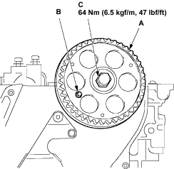
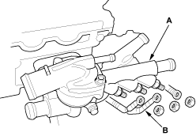

Camshaft Pulley Installation
- Install the camshaft pulley (A).

- Lock the camshaft pulley with TDC fixing bolt (B).
- Tighten the fastening bolt (C) to the specified torque, then remove TDC fixing bolt.
Tightening torque: 64 Nm (6.5 kgf/m, 47 lbf/ft)
NOTE: Lay cylinder head assembly on the wooden block as otherwise glow plugs or valves may be damaged.
- Remove the drive belt (see page 4-20).
- Remove the timing belt (see page 6-7).
- Remove the exhaust manifold (see page 9-4).
- Remove the intake manifold (see page 9-2).
- Remove the upper radiator hose (A), water hose (B), water pipe mounting bolt (C), vacuum pipe mounting bolt (D) and disconnect the glow plug thermo sensor connector (E).

- Remove the water inlet hose and water outlet hose from the thermostat housing (A) and water grow plug harness (B).
